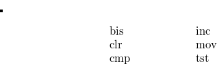

8 Process Management
Process management is concerned with the sharing of the processor and the main memory amongst the various processes, which can be seen as competitors for these resources.
Decisions to reallocate resources are made from time to time, either on the initiative of the process which holds the resource, of for some other reason.
8.1 Process Switching
An active process may suspend itself i.e relinquish the processor, by calling “swtch” (2178) which calls “retu” (0740). This may be done for example if a process has reached a point beyond which it cannot proceed immediately. The process calls “sleep” (2066) which calls “swtch”.
Alternatively a kernel process which is ready to revert to user mode will test the variable “runrun” and if this is non-zero, implying that a process with a higher precedence is ready to run, the kernel process will call “swtch”.
“swtch” searches the “proc” table, for entries for which “p_stat” equals “SRUN” and the “SLOAD” bit is set in “p_flag”. From these it selects the process for which the value of “p_pri” is a minimum, and transfers control to it.
Values for “p_pri” are recalculated for each process from time to time by use of the procedure “setpri” (2156). Obviously the algorithm used by “setpri” has a significant influence. A process which has called “sleep” and suspended itself may be returned to the “ready to run” state by another process. This often occurs during the handling of interrupts when the process handling the interrupt calls “setrun” (2134) either directly or indirectly via a call on “wakeup” (2113).
8.2 Interrupts
It should be noted that a hardware interrupt (see Chapter Nine) does not directly cause a call on “swtch” or its equivalent. A hardware interrupt will cause a user process to revert to a kernel process, which as just noted, may call “swtch” as an alternative to reverting to user mode after the interrupt handling is complete.
If a kernel process is interrupted, then after the interrupt has been handled, the kernel process resumes where it had left off regardless. This point is important for understanding how UNIX avoids many of the pitfalls associated with “critical sections” of code, which are discussed at the end of this chapter.
8.3 Program Swapping
In general there will be insufficient main memory for all the process images at once, and the data segments for some of these will have to be “swapped out” i.e. written to disk in a special area designated as the swap area.
While on disk the process images are relatively inaccessible and certainly unexecutable. The set of process images in main memory must therefore be changed regularly by swapping images in and out. Most decisions regarding swapping are made by the procedure “sched” (1940) which is considered in detail in Chapter Fourteen.
“sched” is executed by process #0, which after completing its initial tasks, spends its time in a double role: openly as the “scheduler” i.e. a normal kernel process; and surreptitiously as the intermediate process of “swtch” (discussed in Chapter Seven). Since the procedure “sched” never terminates, kernel process #0 never completes its task, and so the question of a user process #0 does not arise.
8.4 Jobs
There is no concept of “job” in UNIX, at least in the sense in which this term is understood in more conventional, batch processing oriented systems.
Any process may “fork” a new copy of itself at any time, essentially without delay, and hence create the equivalent of a new job. Hence job scheduling, job classes, etc. are non-events here.
8.5 Assembler Procedures
The next three procedures are written in assembler and run with the processor priority level set to seven. These procedures do not observe the normal procedure entry conventions so that r5 and r6, the environment and stack pointers, are not disturbed during procedure entry and exit.
As has already been noted, “savu” and “retu” can combine to produce the effect of a coroutine jump. The third procedure, “aretu,” when followed by a “return” statement produces the effect of a non-local “goto”.
8.6 savu (0725)
This procedure is called by “newproc” (1889, 1905), “swtch” (2189, 2281), “expand” (2284), “trapl” (2846) and “xswap” (4476,4477).
The values of r5 and r6 are stored in the array whose address is passed as a parameter.
8.7 retu (0740)
This procedure is called by “swtch” (2193, 2228) and “expand” (2294).
It resets the seventh kernel segmentation address register, and then resets r6 and r5 from the newly accessible copy of “u.u_rsav” (which it may be noted, is at the beginning of “u”).
8.8 aretu (0734)
This procedure is called by “sleep” (2106) and “swtch” (2242).
It reloads r6 and r5 from the address passed as a parameter.
8.9 swtch (2178)
“swtch” is called by “trap” (0770, 0791), “sleep” (2084, 2093), “expand” (2287), “exit” (3256), “stop” (4027) and “xalloc” (4480).
This procedure is unique in that its execution is in three phases which in general involve three separate kernel processes. The first and third of these processes will be called the “retiring” and the “arising” processes respectively. Process #0 is always the intermediate process; it may be the “retiring” or the “arising” process as well.
Note that the only variables used by “swtch” are either registers, or global or static (stored globally).
-
2184:
The static structure pointer, “p”, defines a starting point for searching through the “proc” array to locate the next process to activate. Its use reduces the bias shown to processes entered early in the “proc” array. If “p” is null, set its value to the beginning of the “proc” array. This should only occur upon the very first call on “swtch”;
2189:
A call on “savu” (0725) saves the current values of the environment and stack pointers (r5 and r6);
2193:
“retu” (0740) resets r5 and r6, and, most importantly, resets the kernel address register 6 to address the “scheduler’s” data segment;
2195:
Phase Two begins:
The code from this line to line 2224 is only ever executed by kernel process #0. There are two nested loops, from which there is no exit until a runnable process can be found.
At slack periods, the processor spends most of its time executing line 2220. It is only disturbed thence by an interrupt (e.g. from the clock);
2196:
The flag “runrun” is reset. (It is used to indicate that a higher priority process than the current process is ready to run. “swtch” is about to look for the highest priority process.);
2224:
The priority of the “arising” process is noted in “curpri” (a global variable) for future reference and comparison;
2228:
Another call on “retu” resets r5, r6 and the seventh kernel address register to values appropriate for the “arising” process;
2229:
Phase Three begins:
“sureg” (1739) resets the user mode hardware segmentation registers using the stored prototypes for the arising process;
2230:
The comment which begins here is not encouraging. We will return to this point again towards the end of this chapter;
2247:
If you check, you will find that none of the procedures which call “swtch” directly examines the value returned here.
Only the procedures which call “newproc” which are interested in this value, because of the way the child process is first activated!
8.10 setpri (2156)
-
2161:
Process priorities are calculated according to the formula

(time used + PUSER + p\_ nice))\\ \end{tabbing}" style="width: &images/img-0004.png-width;&px;; height: &images/img-0004.png-height;&px;" class="tabbing gen" />where
- (1)
time used = accumulated central processor time (usually since the process was last swapped in), measured in clock ticks divided by 16 i.e. thirds of a second. (More on this later when we discuss the clock interrupt.);
- (2)
PUSER == 100;
- (3)
“p_nice” is a parameter used to bias the process priority. It is normally positive and hence reduces the process’s effective precedence.
Note the somewhat confusing convention in UNIX that the lower the priority, the higher the precedence. Thus a priority of –10 beats a priority of 100 every time.
-
2165:
Set the rescheduling flag if the process, whose priority has just been recalculated, has less precedence than the current process.
The sense of the test on line 2165 is surprising, especially when it is compared with line 2141. We leave it to the reader to satisfy himself that this is not an error. (Hint: look at the parameters for the calls on “setpri”.)
8.11 sleep (2066)
This procedure is called (from nearly 30 different places in the code) when a kernel process chooses to suspend itself. There are two parameters:
the reason for sleeping;
a priority with which the process will run after being awakened.
If this priority is negative the process cannot be aroused from its sleep by the arrival of a “signal”. “signals” are discussed in Chapter Thirteen.
-
2070:
The current processor status is saved to preserve the incoming processor priority and previous mode information;
2072:
If the priority is non-negative, a test is made for “waiting signals”;
2075:
A small critical section begins here, wherein the process status is changed and the parameters are stored in generally accessible locations (viz. within the array “proc”).
This code is critical because the same information fields may be interrogated and changed by “wakeup” (2113) which is frequently called by interrupt handlers;
2080:
When “runin” is non-zero, the scheduler (process #0) is waiting to swap another process into main memory;
2084:
The call on “swtch” represents a delay of unknown extent during which a relevant external event may have occurred. Hence the second test on “issig” (2085) is not irrelevant;
2087:
For negative priority “sleeps”, where the process typically waits for freeing of system table space, the occurrence of a “signal” is not allowed to deflect the course of the activity.
8.12 wakeup (2113)
This procedure complements “sleep”. It simply searches the set of all processes, looking for any processes which are “sleeping” for a specified reason (given as the parameter “chan”), and reactivating these individually by a call on “setrun”.
8.13 setrun (2134)
-
2140:
The process status is set to “SRUN”. The process will now be considered by “swtch” and “sched” as a candidate for execution again;
2141:
If the aroused process is more important (lower priority!) than the current process, the rescheduling flag, “runrun” is set for later reference;
2143:
If “sched” is sleeping, waiting for a process to “swap in”, and if the newly aroused process is on disk, wake up “sched”.
Since it turns out that “sched” is the only procedure which calls sleep with “chan” equal to “&runout”, line 2145 could be replaced by the recursive call
setrun(&proc[0]);
or better still, by just
rp = &proc[0]; goto sr;
where “sr” is a label to be inserted at the beginning of line 2139.
8.14 expand (2268)
The comment at the beginning of this procedure (2251) says most of what needs to be said about the procedure, except for the question of “swapping out” when not enough core is available.
Note that “expand” takes no particular notice of the contents of the user data area or stack area.
-
2277:
If the expansion is actually a contraction, then trim off the excess from the high address end;
2281:
“savu” stores the values of r5 and r6 in “u.u_rsav”;
2283:
If sufficient main memory is not available ...
2284:
The environment pointer and stack pointer are recorded again in “u.u_ssav”. But note that since no new procedures have been entered, and since there has been no cumulative stack growth, the values recorded are the same as at line 2281;
2285:
“xswap” (4368) copies the core image for the process designated by its first parameter to disk.
Since the second parameter is non-zero the main memory area occupied by the data segment is returned to the list of available space.
However the computation continues using the same area in main memory until the next call on “retu” (2193) in “swtch”.
Note also that the call on “savu” at line 2189 in “swtch” stores new values in “u.u_rsav” after the disk image has been made (and therefore serves no useful purpose since the core image has already been officially “abandoned”);
-
2286:
The “SSWAP” flag is set in the process’s proc array element. (This is not swapped out, so the effect is not lost);
2287:
“swtch” is called, and the process, still running in its old area suspends itself. Since the call on “xswap” will have resulted in the “SLOAD” flag being switched off, there is no way that “swtch” will choose the process for immediate reactivation.
Only after the disk image has been copied back into core again can the process be activated again. The “return” executed by “swtch” is a return to the procedure which called “expand”.
8.15 swtch revisited
What happens to the process when it is reactivated i.e. it becomes the “arising” process in “swtch”?
-
2228:
The stack and environment pointers are restored from “u.u_rsav” (Note that a pointer to “u” is also a pointer to “u.u_rsav” (0415) but ...
2240:
If the core image was swapped out e.g. by “expand” ...
2242:
No reliance is placed on the values of the stack and environment pointers, and they are reset
The question is if the values stored in “u.u_ssav” at line 2284 are the same as values stored in “u.u_rsav” at line 2281, how did they get to be different?
Presumably this is what “you are not expected to understand” (line 2238) ... clearly “xswap” should be investigated ... the trail finally ends at Chapter Fifteen ... in the meantime you may wish to investigate for yourself so that you may join the “2238” club that much sooner.
8.16 Critical Sections
If two or more processes operate on the same set of data, then the combined output of the set of processes may depend on the relative synchronisation of the various processes.
This is usually considered to be highly undesirable and to be avoided at all costs. The solution is usually to define “critical sections” (it is the programmer’s responsibility to recognise these) in the code which is executed by each process. The programmer must then ensure that at any time no more than process is executing a section of code which is critical with respect to a part1cular set of data.
In UNIX user processes do not share data and so do not conflict in this way. Kernel processes however have shared access to various system data and can conflict.
In UNIX an interrupt does not cause a change in process as a direct side effect. Only where kernel processes may suspend themselves in the middle of a critical section by an explicit call on “sleep”, does an explicit lock variable which may be observed by a group of processes) need to be introduced. Even then the actions of testing and setting the locks do not usually have to be made inseparable.
Some critical sections of code are executed by interrupt handlers. To protect other sections of code whose outcome may be affected by the handling of certain interrupts, the processor priority is raised temporarily high enough before the critical section is entered to delay such interrupts until it is safe, when the processor priority is reduced again. There are of course a number of conventions which interrupt handling code should observe, as will be discussed later in Chapter Nine.
In passing it may be noted that the strategy adopted by UNIX works only for a single processor system and would be totally inappropriate in a multiprocessor system.